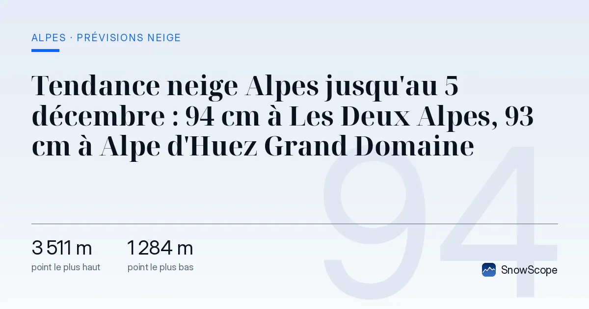
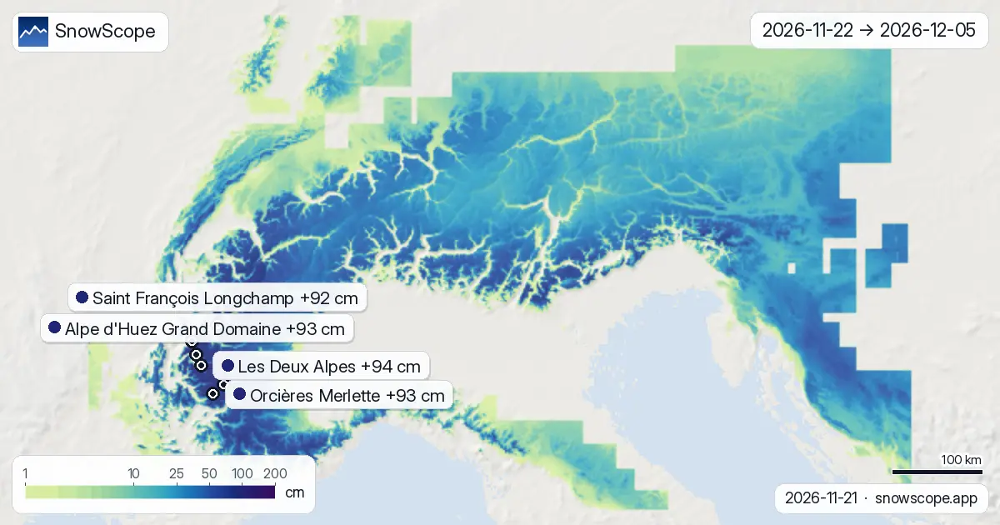
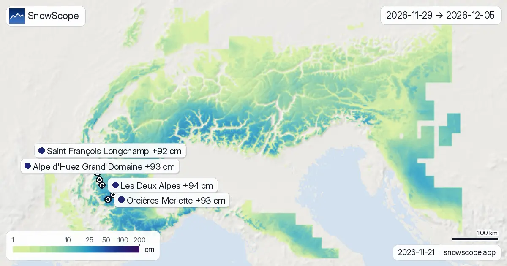

Tendance neige Alpes jusqu'au 5 décembre : 94 cm à Les Deux Alpes, 93 cm à Alpe d'Huez Grand Domaine
La neige nouvelle couvrira les Alpes de façon inégale au cours des deux prochaines semaines. Les sept premiers jours, du dimanche 22 novembre au samedi 28 novembre, apporteront l'essentiel—la plupart des stations reçoivent les trois quarts de leur neige de quinze jours d'ici là--tandis que la deuxième semaine se calme.
Consultez les prévisions neige en temps réel pour Les Deux Alpes sur l'application SnowScopeHauteurs de neige, alertes poudreuse et carte 3D, gratuitement.
Quelles stations, quels cumuls
Les Deux Alpes dominent avec environ 94 cm de neige nouvelle prévue sur 14 jours sur ses pentes supérieures (l'écart entre les deux prévisions est de 61 à 127 cm). Alpe d'Huez Grand Domaine suit de près : environ 93 cm. Les deux stations se situent au-dessus de 1 600 m, où l'air retient moins d'humidité ; pourtant, elles en reçoivent beaucoup car elles font face aux tempêtes de plein fouet.
Orcières Merlette, Saint François Longchamp, Les 7 Laux et Puy-Saint-Vincent se situent tous dans la bande 87–93 cm. L'écart d'Orcières Merlette est le plus large—53 à 134 cm--ce qui signifie que les deux prévisions divergent davantage à cet endroit.
Chaque station de cette liste reçoit au moins quatre jours avec 5 cm ou plus de neige nouvelle.
| Station | Hauteur de neige | Neige fraîche, 72 h | Attendu, jours suivants | Sommet |
|---|---|---|---|---|
| Les Deux Alpes | 102 cm | 64 cm | 72 cm | 3 511 m |
| Alpe d'Huez Grand Domaine | 92 cm | 84 cm | 89 cm | 3 306 m |
| Orcières Merlette | 50 cm | 44 cm | 48 cm | 2 731 m |
| Saint François Longchamp | 59 cm | 93 cm | 89 cm | 2 516 m |
| Les 7 Laux | 35 cm | 62 cm | 64 cm | 2 372 m |
| Puy-Saint-Vincent | 36 cm | 39 cm | 46 cm | 2 664 m |

Dimanche 22 novembre : le coup de massue
Un seul jour dominera. Dimanche 22 novembre, 813 des 1 186 stations des Alpes suivies connaîtront 5 cm ou plus. Saint François Longchamp atteint 52 cm ce jour-là seul--plus de la moitié de la profondeur nécessaire pour couvrir la neige fine de début de saison. Les Deux Alpes et Alpe d'Huez Grand Domaine reçoivent chacune 47–49 cm. Même les petites stations de ce groupe--Les 7 Laux, Orcières Merlette, Puy-Saint-Vincent--reçoivent 34–46 cm.
Trois autres jours comptent : lundi 23 novembre (549 stations à 5 cm ou plus), mercredi 25 novembre (372 stations), et jeudi 26 novembre (371 stations). Ces quatre jours concentrent la majorité de la neige de la première semaine. Après cela, le rythme baisse fortement.

Comment les deux semaines se répartissent
Dans l'ensemble de la région des Alpes, 73 % du cumul de deux semaines tombe la première semaine (22–28 novembre). La deuxième semaine (29 novembre au 5 décembre) ajoute le reste, surtout sous forme de précipitations sporadiques plutôt qu'une grosse chute. Les Deux Alpes et Alpe d'Huez Grand Domaine illustrent bien cette répartition : 76–80 cm la première semaine, puis seulement 13–18 cm la deuxième semaine.
Seul Puy-Saint-Vincent et Orcières Merlette affichent une part plus élevée la deuxième semaine--25 et 28 cm respectivement--car ils se situent plus bas et subissent davantage les systèmes plus faibles de la deuxième semaine. Si vous prévoyez de skier début décembre, la base de la première semaine sera encore fraîche, mais n'attendez pas la même poudre quotidienne.

Neige par altitude : où elle s'accumule le plus
L'altitude compte. Entre 1 000 et 1 500 m, la prévision est généralement 22 cm, les zones les plus enneigées atteignant 32 cm. Passez à 1 500–2 000 m et vous obtenez 32 cm typique, 46 cm dans les meilleures zones. Entre 2 000 et 2 500 m, les chiffres montent encore : 34 cm typique, 52 cm dans les poches les plus fortes.
Au-dessus de 2 500 m, l'augmentation ralentit. À 2 500–3 000 m, vous voyez 37 cm typique et 52 cm au sommet ; au-dessus de 3 000 m, environ 43 cm typique avec 54 cm dans le quart le plus enneigé. La zone idéale pour construire une base est donc la bande 1 500–2 500 m, où l'air est assez froid pour une neige constante mais pas trop haut pour que les tempêtes laissent moins derrière elles.
Comment cela se compare à la normale de novembre
Aux Deux Alpes, les pentes supérieures retiennent 102 cm aujourd'hui (21 novembre). La moyenne à long terme pour cette date est 28 cm. La base est donc déjà environ 3,6 fois plus profonde que d'habitude--un cadeau des tempêtes précédentes.
Dans seulement un hiver sur dix, cet endroit atteint 70 cm fin novembre. Les 94 cm arrivant au cours des 14 prochains jours porteront la profondeur bien au-dessus de ce que la plupart des skieurs vivent. Il y a une semaine, 4 cm reposaient sur la même pente. Le saut à venir est dramatique.
Lire les cartes et ce qui change
Trois cartes montrent le tableau : les deux semaines complètes en une, puis la première semaine et la deuxième semaine séparément. Le terrain gris signifie moins de 1 cm. Les bleus et pourpres plus foncés signifient une neige plus abondante. Les points des stations se situent sur les hauteurs réelles des pentes, pas dans le village, donc un point qui chevauche deux couleurs est mieux lu en cliquant dessus.
Ces prévisions peuvent changer. Les deux prévisions s'accordent actuellement sur le schéma général--une première semaine humide et active--mais divergent sur le timing de la deuxième semaine. Nous mettons à jour chaque matin, alors consultez à nouveau à l'approche du 22 novembre. Un front chaud ou un soudain changement du courant-jet pourrait adoucir la chute ou repousser la pluie plus haut. Le niveau 0 °C se déplacera ; consultez la carte à nouveau la veille de votre départ.
Conseils aux skieurs
- Visez dimanche 22 novembre ou la semaine suivante. Dimanche est le jour de pointe dans presque toutes les stations ; lundi 23 novembre porte encore une neige abondante. Si vous ne pouvez pas faire ces dates, mercredi 25 novembre offre une deuxième chance avant la fin de la première semaine.
- Les stations au-dessus de 2 000 m conserveront la neige plus longtemps et resteront skiables dans la deuxième semaine. Les stations plus basses risquent une pluie mixte après la chute du 22–23 novembre, surtout si le niveau 0 °C monte en milieu de semaine.
- Avant toute sortie hors-piste ou randonnée, consultez le bulletin officiel d'avalanche de votre région. Quatorze jours de neige nouvelle sur une base fine de début de saison peuvent déclencher des slides.
- La neige sur la carte de prévision ne signifie pas que la station est ouverte. Confirmez le statut des remontées et les dates d'ouverture sur le site web de chaque station avant de réserver un voyage.
- Habillez-vous chaudement : cette neige arrive sur un paysage gelé, donc la base sera ferme et les carres mordront. Attendez-vous à un ski rapide sur la neige damée en milieu de semaine à mesure que la chute se tasse.
À propos de ces chiffres
Les hauteurs de neige des stations sont la neige la plus épaisse sur le haut du domaine à la date indiquée ; ce sont des estimations pour une zone, pas une mesure en un point. Les prévisions peuvent changer. Consultez toujours le bulletin d'avalanche officiel avant le hors-piste.
Bulletins d'avalanche officiels: EAWS (Alps)
Citer ce bulletin
Pour la recherche, l'enseignement ou la presse : chiffres et graphiques réutilisables librement sous CC BY 4.0 avec cette citation.
SnowScope (2026), Tendance neige Alpes jusqu'au 5 décembre : 94 cm à Les Deux Alpes, 93 cm à Alpe d'Huez Grand Domaine, https://snowscope.app/blog/fr/2026/11/alps-2-week-snow-forecast-maps-21-november-2026.html, consulté le 2026-11-21
SnowScope (Atlas Labs). (2026, November 21). Tendance neige Alpes jusqu'au 5 décembre : 94 cm à Les Deux Alpes, 93 cm à Alpe d'Huez Grand Domaine. SnowScope snow reports. https://snowscope.app/blog/fr/2026/11/alps-2-week-snow-forecast-maps-21-november-2026.html
BibTeX
@misc{snowscope2026alps2weeksnowforecastmap,
author = {{SnowScope (Atlas Labs)}},
title = {Tendance neige Alpes jusqu'au 5 décembre : 94 cm à Les Deux Alpes, 93 cm à Alpe d'Huez Grand Domaine},
year = {2026},
month = nov,
howpublished = {\url{https://snowscope.app/blog/fr/2026/11/alps-2-week-snow-forecast-maps-21-november-2026.html}},
note = {Published 2026-11-21 12:14 UTC; accessed 2026-11-21}
}· CC BY 4.0 · Méthodes, données et outils →
Les Deux Alpes : neige et température selon l'altitude, cet hiver vs l'hiver dernier (outils) →
Suivre Les Deux Alpes
Gratuit : un message quand la neige arrive, et la météo chaque matin.